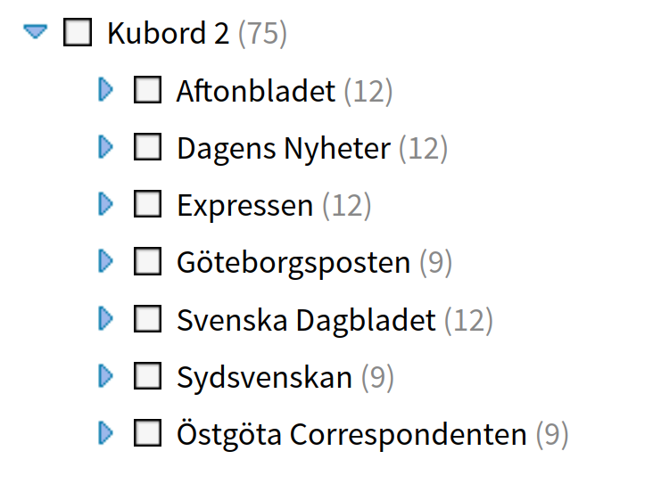
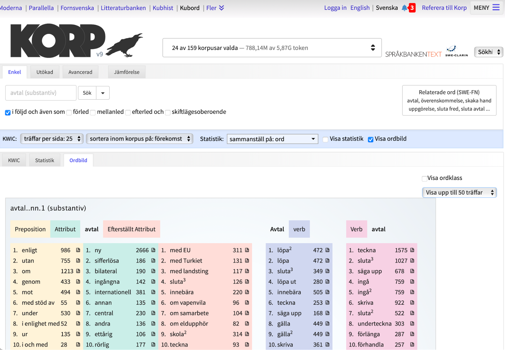

Since the last century, linguists have gradually become increasingly interested in quantitative research. One of the most well-known examples of how linguistics can benefit from quantitative methods is the story of the American linguist George Kingsley Zipf. In the 1930s, Zipf broadened his scientific focus from linguistics to statistics. This fascination led to the formulation of two laws: the law of abbreviation and a law addressing frequency distribution. The latter, known simply as Zipf’s law, states that the distribution of words in a natural language is inversely proportional to their rank in the frequency distribution. For example, the second most common word in a corpus occurs only half as frequently as the first one, the third word is half as frequent as the second one, and so on.
This law has been used in various research projects, including the analysis of the Voynich manuscript and, more recently, the investigation of AI-generated texts.
Advancements in quantitative research such as language technology have also proven to be extremely helpful in other fields of language research such as lexicography. Language researchers have, for a long time ago, discovered the potential of exploring language statistics, as they provide us with important information about language use, such as word formation and language change. In this regard, newspaper data seem to be an excellent source for identifying the emergence of new words or tracking changes in the meaning of existing ones, since this data typically reflect the language used at the time it was published. Books, on the other hand, while providing vast amounts of high-quality data, the lengthy publishing process and the specific nature of literary language make them less anchored in time, hence not as fitting for the aforementioned purposes compared to newspapers.
Kubord and Kubord 2
With this in mind, KBLab together with Språkbanken Text, has been working towards the development of freely available datasets to support research in, but not limited to, lexicography. We have aimed at maximizing the usefulness of the data for researchers while at the same time respecting our copyright protection laws, and the result of these efforts are Kubord – a data set containing annotated word frequencies from modern Swedish newspapers. To conduct the analysis, the texts have been processed using the text analysis tool Sparv, developed at Språkbanken Text. In addition to calculating word statistics, the newspaper data has been automatically annotated with additional linguistic information such as part-of-speech tags and lemmas.
The original Kubord data set consists of 84 datasets from Dagens Nyheter, Svenska Dagbladet, Aftonbladet, Expressen, Östgöta Correpondenten, and Göteborgsposten. The majority of the data spans from 2010 to 2021; however, word frequencies for Dagens Nyheter from 2001-2009 are also available.
Extending the work on Kubord, 75 new datasets, marked as Kubord 2, have recently been developed and made publicly available. Kubord 2 can be seen as an enriched version of the original corpora. The novelty lies in that the analyses are supplemented with information about the frequency of the pairs of syntactically related words, such as a word acting as the subject paired with a word acting as the main verb, for all the words present in the data. Similar to Kubord, Kubord 2 covers the years 2010-2021, and the aim is to update the collection with newer data as it becomes available.

Making the most of Kubord
The usefulness of having Kubord available for lexicographers has been described with examples in the Språkbanken blog post titled “Hur fångar vi upp svenskans nya ord med hjälp av Kubord?” (How do we capture new Swedish words with the help of Kubord?).
As highlighted in the article, tracking changes in word popularity (measured by frequency counts) can provide insight into changes in society - how our eating habits evolve, how we spend our free time, and more. It can therefore serve as a valuable source of knowledge for humanistic researchers such as linguists, historians, or sociologists. Additionally, it sheds light on which words come into use and when, which is especially useful in the context of lexicographical projects such as the Swedish Academy contemporary dictionary project (Svenska Akademiens samtidsordböcker).
Thanks to the annotated word statistics obtained from Kubord, we can conclude that some words that became more prominent during 2020-2021 were:
barnfridsbrott, charkbricka, freeskiing, fucking, gastropub, glamping, hjärndimma, höghöjdsbana, incel, intimitetskoordinator, jätteloka, kakuro, klassikerskydd, kulturtolk, lockdown, magnetfiskare, mikrostat, minoritetsstress, miso, mockumentär, mobildata, mobilitetshus, nagelsalong, naturhus, nettonollutsläpp, näringsterapeut, parallellsamhälle, powerwalk, preklinisk, prosecco, reduktionsplikt, rättspsyk, röstassistent, salsiccia, sexsomni, skidalpinism, skills, skyddsperson, sportswashing, streetfood, syrah, trygghetspension, uppläggningskostnad, utsläppssiffra, verkställighetshinder, villkorstrappa, yes.
The majority of these words will most likely be incorporated in future editions of the Swedish Academy’s contemporary dictionaries.
Using the research tool Korp for Kubord
Korp, a research tool developed at Språkbanken Text, is a tool that supports quantitative research of (sequences of) annotated words, and is heavily used by the Swedish lexicographers. Since Kubord data set is restricted to words rather than texts, not all of Korp’s functionalities are available, but some of the most important ones are, such as the statistics and the word picture mode. As an example, when a lexicographer investigates different kinds of word combinations, a word picture is useful, as it gives an overview of selected syntactical environments of a word. For nouns the word picture contains typical verbs, prepositions, pre-modifier, and post-modifiers, etc.
Below you find the word picture of the Swedish noun avtal, based on Kubord 2.

Some of the words in the first column of the word picture represent more or less free combinations that include avtal, e.g. enligt (ett) avtal och med stöd av (ett) avtal. In the column with pre-modifiers you find (ett) nytt/skriftligt/muntligt/bilateralt/internationellt avtal, and more. This information is useful for a lexicographer when looking for good and typical language examples of the current word, which must support the meaning descriptions and, at the same time, demonstrate how the word is typically used.
Some of the words and phrases that appear in the word picture also support a lexicographer’s work on providing valency information concerning avtal (see e.g. the post-modifier including med).
Finally, the word picture provides a lexicographer with recurrent word combinations including the noun and a verb, e.g. teckna/sluta/ingå/underteckna/löpa ut/säga upp ett avtal (see the columns 4–5).
Now, let’s explore how we can supplement this example with information from the Kubord 2 data set by examining some of the new Swedish words mentioned above:
The word picture of streetfood illustrates that this particular noun is often preceded by adjectives such as asiatisk, mexikansk, kantonesisk and vegansk. These adjectives clearly show the large selection, the international elements and the variety when it comes to street food of today. Furthermore, in written texts streetfood often is preceded by verbs such as servera, laga, sälja, äta och avnjuta. Obviously, both the seller’s and the buyer’s perspective on the sale of this type of food are represented in the list.
A large number of more or less new words became more established in Swedish during the pandemic. One of those words is lockdown. (The more Swedish-sounding nedstängning was also established but was not much used.) When it comes to lexicographic work, it can be discussed which of these pandemic related words are temporary and which are here to stay. A search in all texts in KB’s Svenska dagstidningar shows that the use of the word lockdown has decreased dramatically this year.
A word picture for lockdown based on Kubord 2 gives a richer view of the word and shows that the actual shutdown is often specified by attributes such as total, (sten)hård, strikt, fullskalig och fullständig, but that a lockdown can also be partiell, and in newspaper texts, the word is often a subject to the verb införa and an object to the verb combination träda i kraft. All this relevant information if the word ever finds its way into one of the Swedish dictionaries.
Among the words that are more frequently used in recent years you also find the adjective preklinisk. A search in KB’s Svenska dagstidningar shows that the word has been used since at least 1945 in Swedish texts. The adjective also has different meanings in modern Swedish. For example, when preklinisk is followed by words like läkemedelsutveckling, studie(r) och test(er) in its word picture, it is with the meaning ‘relating to drug testing’. When preklinisk, on the other hand, is used together with the noun fas(er), it is with the meaning ‘which applies to the early stage of a certain disease’. In other words, the word picture view gives support in sense differentiation.
A Korp search also shows that it is, above all, the word form prekliniska (as in prekliniska tester) that is used in Kubord 2 and it is also something that a lexicographer takes into account when giving typical examples of how the word is used.
A final example word is verkställighetshinder. It has increased strongly in use in Swedish texts since around 2012. The word is primarily used in the context of migration, and this context is clearly evident as that the name Migrationsverk is present in the word picture. Its word picture further reveals that the noun is used in, at least, two different contexts. On the one hand, a person can anmäla or åberopa obstacles to verkställighetshinder. There may also exist a verkställighetshinder, as in föreligga verkställighetshinder.
The word is typically followed by the word combination för utvisning but it can also be av skyddskäl, which should also be included in a dictionary article. Consequently, the findings in Kubord 2 make both the description of the semantics of the words and its phraseological behavior more comprehensive.
Finding the data set
The data sets can be downloaded from the Språkbanken Text (Kubord 1 and Kubord 2) or accessed through Korp’s Kubord mode Korp’s Kubord mode. You can also conveniently search and explore the data through Korp’s API.
Kubord offers intriguing material for humanistic research, which would otherwise only be accessible to researchers within library premises due to copyright protection. While the context of sentences in which words occur is not available in these data sets, the annotated word frequencies and syntactically co-occurring words can still be useful for researchers interested in tracking and analyzing trends in new Swedish words.
With this in mind, there is a wealth of data waiting to be explored. Feel free to dive in and explore it yourself!
Acknowledgements
Part of this development work was carried out within HUMINFRA infrastructure project.

Citation
@online{forsberg2023,
author = {Forsberg, Markus and Sikora, Justyna and Sköldberg, Emma},
title = {Words Unboxed: Discovering New Words with {Kubord}},
date = {2023-08-29},
url = {https://kb-labb.github.io/posts/2023-08-29-kubord/},
langid = {en}
}